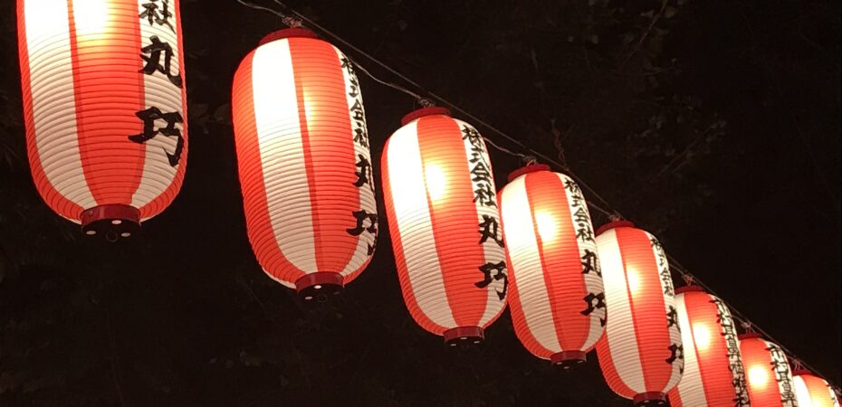

Święto Obon – Japońskie „Zaduszki”
W okresie O-bon Japończycy odwiedzają i porządkują groby rodzinne i składają na nich ofiary. Zwyczaj ten przekształcił się w święta jednoczenia rodziny. Według wierzeń Japończyków, w czasie O-bon duchy przodków powracają na Ziemię, aby odwiedzić swoich krewnych. W miastach, dzielnicach i osiedlach odbywają się lokalne festiwale połączone z tradycyjnymi tańcami – bon-odori. Pod koniec tego święta na rzeki, jeziora i morza puszcza się lampiony (tōrō-nagashi), aby zaprowadziły dusze zmarłych z powrotem do ich krainy.
Bon Odori
Równolegle ze świętowaniem spotkań z duszami zmarłych w wielu miejscach organizuje się tańce i zabawy. Zwyczaj ten wywodzi się już z XV wieku. Są to wesołe wieczorne wydarzenia trwające często wiele godzin. Przybierają formę lokalnych spotkań, tańców i zabaw mieszkańców, do których mogą swobodnie dołączyć także przechodnie i widzowie. Bardzo chętnie przyjmowani są i włączani do zabaw cudzoziemcy, którzy z nieukrywanym zaciekawieniem oglądają te tradycyjne sierpniowe zwyczaje. To upalna pora, więc Japończycy ubierają się w letnie przewiewne ubiory tw. Yukata 浴衣 . Dla ochłody używają okrągłych wachlarzy Uchiwa 団扇 i wycierają pot bawełnianymi ręczniczkami Tenugui 手ぬぐい.
Awa Odori
Inną formą święta są wielkoformatowe parady taneczne tzw. Awa odori 阿波踊り, przemierzające ulice miast i dzielnic. Uczestniczą w nich liczne grupy taneczne ubrane w przepiękne tradycyjne letnie stroje. Często są to profesjonalni tancerze, którzy wykonują choreograficznie przygotowane pokazy taneczne. Dzieje się to przy głośnych dźwiękach tradycyjnych instrumentów japońskich, jak shamisen, flety, bębny i in. Typowym obuwiem są wtedy Geta 下駄 – drewniane klapki, które dodatkowo mają pomagać wybijać rytm. Tancerze mają na nogach miękkie obuwie przypominające skarpety „tabi”. Chodzi głównie o to, żeby było głośno, żywo i kolorowo.
Kiedyś tancerze zakrywali twarze, owijając je ręczniczkami bądź nakładając maski lub duże słomiane kapelusze. Chodziło o to, żeby nie można było rozpoznać tancerzy. Ludzie i dusze zmarłych mają się bowiem łączyć we wspólnym tańcu i zabawie. Rytm, taniec, głośna muzyka i śpiewne okrzyki wnikają w serca wszystkich widzów. Każdy podryguje i ma ochotę dołączyć do paradujących tancerzy. Święto Obon to okazja do poczucia jedności z Japończykami, wspólnej zabawy, radości i tańca. Różnice rasowe, kulturowe, wiek nie mają żadnego znaczenia.